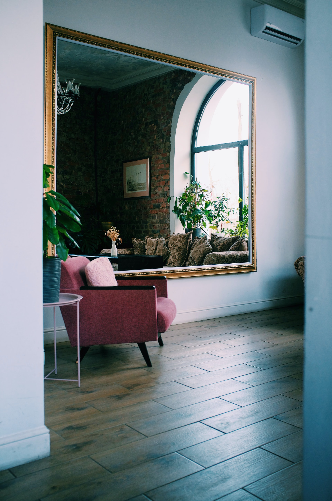

Blog
Guía para comprar
Escrito el: 20/10/2021 por: Susana Estevez
Comprar una propiedad implica un gran esfuerzo y es un paso muy importante en la vida de las personas, por eso, acá te dejamos una guía con los pasos y todos los datos útiles que tenés que conocer para que la operación sea todo un éxito.
Índice
La búsqueda
La oferta
La firma del boleto compra-venta
La escrituración
El pago
La búsqueda
Para buscar el inmueble ideal que cumpla con todas tus necesidades te recomendamos que respondas previamente estas preguntas que van a guiarte en tu decisión.
¿Qué tipo de inmueble estás buscando?
¿Cuántos ambientes debe tener la propiedad ideal? ¿Con o sin cochera? ¿Con o sin terraza/balcón/patio?
¿Querés que tenga amenities? ¿Cuáles?
¿En qué barrios o en qué zona puede ubicarse la propiedad?
¿Cuál es el presupuesto que tenés? Es importante tener en cuenta que hay que contemplar los gastos de inmobiliaria, el impuesto a los sellos, la escrituración y los honorarios del escribano.
¿Cuánto estimas que podés gastar por mes? Es fundamental contemplar expensas, en caso de que las haya, ABL y los servicios básicos.
Consejos a la hora de visitar una propiedad para comprar:
Acudir a la visita con otra persona puede ser útil para tener una segunda opinión de confianza.
Visitarla en distintos momentos del día para ver la luz que recibe.
Ver la orientación para entender la luminosidad.
Visitarla en distintos momentos de la semana para ver el movimiento de la zona.
Corroborar la accesibilidad del barrio y los sitios de interés cercanos (zonas verdes, transporte público, comercios, instituciones).
Solicitar facturas de los servicios y las expensas.
Verificar el correcto funcionamiento del agua y el gas.
Comprobar el buen funcionamiento de la caldera o el termotanque.
Prestar atención a la presencia de humedad o grietas en las paredes.
Consultar por la calefacción y ventilación.
La oferta
Cuando encontrás la propiedad que cumple con todos los requisitos que necesitabas y se ajusta al valor que podés pagar, es momento de hacer una oferta. La oferta refleja la voluntad de compra y funciona a modo de reserva, la cual el vendedor puede aceptar o rechazar. En caso de aceptar, el inmueble debe sacarse de la venta para seguir con los trámites correspondientes a la compra; en caso de arrepentirse, el vendedor deberá devolver el monto de dinero entregado.
La firma del boleto de compra-venta
Una vez que ambas partes se comprometen a continuar con la operación, se firma el boleto de compra-venta. Se trata de un documento que refleja la promesa bilateral, comprometiendo al vendedor a vender y a vos a efectuar la compra, es decir, a proceder a la escrituración. Además, se deja un monto considerable como seña que suele ser el 25% del valor total del inmueble. En caso de que te arrepientas, perdés la seña. Si el que se arrepiente es el vendedor, él deberá devolverte el doble del monto entregado. En el documento queda establecido el precio, la fecha o plazo de escrituración, la designación del escribano, la identificación del inmueble, los datos personales, los informes de inhibición y el dominio y el estudio de los títulos.Tené en cuenta que pueden pasar 30 días hasta la escrituración y que la instancia de la firma del boleto compra-venta no siempre se realiza, sino que muchas veces se lleva adelante la escrituración directa.
La escrituración
Es el acto formal que establece la compra y venta de la propiedad donde la operación queda efectuada. Recordá que como comprador podés elegir qué escribano querés que lleve adelante la operación y es uno de los gastos que debés afrontar y contemplar. Antes de la escrituración, el escribano se encarga de hacer un estudio y la revisión previa de títulos, aspectos jurídicos e impositivos para posteriormente inscribir al inmueble en el Registro de la Propiedad del Inmueble de la provincia a la que corresponda.
La documentación que necesitás para poder escriturar es:
El título de la propiedad original inscripto en el Registro de la Propiedad Inmueble.
Boleto de compra-venta, en caso de haberse firmado.
Fotocopias de DNI y la constancia de CUIL/CUIT del comprador, vendedor y sus convivientes o cónyuges cuando corresponda.
Importante: Tené en cuenta que si alguno de los firmantes no concurriere a la firma de la escritura es necesario el poder original y con las facultades suficientes del mismo para el acto.
La sentencia de divorcio en caso de corresponder.
Las boletas de los impuestos, tasas y gravámenes.
Informe de inhibición: un informe emitido por el Registro de la Propiedad del Inmueble que expone la situación actual del vendedor, si está inhibido o no para vender. El informe demora entre 2 y 5 días hábiles para inmuebles en CABA y 15 días aproximadamente para provincias
Informe de dominio: un informe también emitido por el Registro de la Propiedad del Inmueble que proporciona la titularidad del inmueble y demuestra si posee algún tipo de gravamen, es decir, corrobora si tiene hipotecas, embargos, si el inmueble está afectado al bien de familia, si levantó la inhibición o sólo fue para el efecto de la escritura.
También, es importante tener en cuenta:
Certificado de no retención del Impuesto a la Transferencia de Inmueble (ITI): es un certificado que permite quedar exento del ITI, un impuesto nacional a la transferencia de inmueble que retiene el 1,5 % sobre el precio de venta para aquellos inmuebles que fueron adquiridos antes del 1 de enero del 2018 y que no están destinadas a casa-habitación, lo que significa que no tienen uso como vivienda única, familiar y de ocupación permanente.
El Impuesto a las Ganancias: establece que se debe tributar una alícuota, es decir, una cuota proporcional del 15% de la diferencia entre el valor de compra y el valor de venta del inmueble. No se grava sobre la propiedad que se utiliza para vivienda.
El Impuesto de Sellos: un impuesto de alcance local, por lo tanto varía en cada provincia, en CABA es del 3,6 % y en GBA del 2% sobre el precio del inmueble o el valor de referencia de inmuebles, el que sea mayor.
El COTI (Código de Oferta y Transferencia de Inmuebles): es un deber informativo que debe ser obtenido por el propietario mediante la página web de AFIP previo a la escrituración, siempre que el valor del inmueble sea superior a $1.500.000.
En el caso de ser un inmueble afectado a la propiedad horizontal también es requisito:
Una copia del reglamento de copropiedad y administración, o del reglamento de propiedad horizontal.
Los datos de contacto de la administración del edificio
El libre de deuda de expensas
En algunos casos, el plano de afectación a propiedad horizontal.
Si el inmueble que se va a vender está ubicado en la provincia de Buenos Aires es necesario contar con
El Estado Parcelario, un trámite para evaluar la superficie, la medición, delimitación y valuación de la superficie del terreno o el inmueble; para el cual es necesario contratar un agrimensor matriculado.
Una fotocopia de un impuesto de ARBA, Impuesto Municipal y Aguas.
El pago

Se realiza junto con la escrituración, allí queda asentada la entrega real y efectiva del inmueble. Es posible acordar la división de gastos, pero, de acuerdo a los usos y costumbres, los gastos que debés afrontar como comprador de un inmueble son aquellos generados por la expedición e inscripción de tu título:
Honorarios de inmobiliaria, entre el 3% y el 4% sobre el precio de la venta.
El impuesto de sellos, la mitad la abonás como comprador y la otra mitad el vendedor.
Honorarios profesionales del escribano.
Gastos de escritura: el costo depende de la ubicación del inmueble.
Según cada provincia los costos de los certificados que se piden al Registro de la Propiedad Inmueble, los certificados para evaluar deudas y gravámenes, como así también tasas locales, pueden variar.
Cuatro tendencias para renovar tu habitación
Escrito el: 20/10/2021 por: Alvara Machado

Dormitorio, habitación, minimalista, moderna, tendencia y led, son búsquedas que se dispararon en el último tiempo. La reconfiguración del hogar obligó a pensar cómo hacer de este espacio, ahora multifunción y habitado las 24 horas, un ambiente de trabajo, estudio y descanso bajo las tendencias de decoración en equilibrio con el bienestar. La moda aesthetic que enarbolan como bandera los jóvenes en Tiktok, la vuelta de lo vintage, la presencia de la naturaleza, lo minimalista y lo tecnológico, son estilos muy distintos entre sí, pero que comparten algunos elementos, que según la combinación que se les dé, revitalizan ambientes de manera muy sencilla.
Botánica de interior

En un momento en el que se perdió la conexión con la naturaleza, la tendencia que pisa con fuerza este año propone recuperar el vínculo entre el ser humano y lo natural. La botánica coloniza los espacios de la casa y la búsqueda por materiales del ambiente exterior y orgánico se hace presente. En el piso, en las esquinas, estanterías y hasta en mesas, con macetas minimalistas de cerámica blancas, negras o estampadas, las plantas de interior tomaron el protagonismo de las habitaciones. No sólo son una opción con múltiples beneficios estéticos, sino que también son fundamentales para equilibrar el ambiente, brindar sensación de calidez y frescura y reducir el estrés. Es importante tener en cuenta a la hora de usarla como decoración, las necesidades de luz y humedad según la elección.
Otra opción son las plantas artificiales. Existe un amplio repertorio de variedades, que con distintos materiales, imitan especies muy similares al aspecto de una planta real. Tienen algunos beneficios como, por ejemplo, el hecho de no requerir cuidados especiales ni de cualidades particulares

Luces Led

Tiras de luces que recorren de punta a punta una pared, alrededor de espejos y de fotos colgadas. Sus distintos formatos permiten generar rincones cálidos, con colores, iluminar techos y cabezales de habitaciones. Una idea versátil y de bajo consumo que se adapta muy bien tanto a un estilo gamer, como a un estilo chic y natural.
Espejos
Si de iluminación hablamos, los espejos son un elemento fundamental para dar luminosidad a los espacios. La nueva moda muestra la llegada de espejos amorfos, únicos y originales que descontractura ambientes, la preponderancia del formato circular y de los espejos hexagonales que funciona a la perfección para distribuir en las paredes o crear un diseño particular.
Vinilos
Mejorar una pared nunca fue tan fácil, los vinilos decorativos y autoadhesivos son sencillos de colocar en cualquier tipo de superficie, también son simples de limpiar y cuidar. Se trata de un producto con múltiples variedades de patrones, estampas e ilustraciones que hasta se puede personalizar al gusto de cada uno. Desde mandalas, hasta diseños botánicos, frases y figuras geométricas, las opciones posibilitan resaltar espacios pequeños con una nueva armonía en simples pasos.